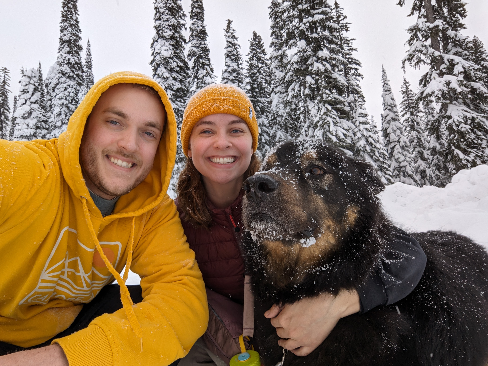

Projects
Web Design
HTML and CSS examples
Dark Product Site
Light Lifestyle Site
Javascript examples
Memory Game
Small Exploring Game
Learning Dart and Flutter
Having a desire to enter mobile app development, I was drawn to Flutter
for it's cross-platform simplicity.
In my spare time I have been learning about the framework and put together
a few sample projects.
Dart + Flutter Example
Personal Website
I started this website on May 12th 2024 as a way to display my skills as
a developer. On this site you will be able to see many examples of
different programming languages, all in one place.
My Website
My Github
Notable Work Projects
Team Projects
Format and Create SQL patches and REST Api calls to enable and disable
them
Updating and improving older code to enhance performance
Solo Projects
Added functionality to truncate Time Off Requests that overlap an
employees termination period.
Creating various toggle features within the scheduling components.
Working on urgent customer facing issues in a timely manner
Summary
Software Developer with five years of professional experience working on
a Cloud based S.a.a.S..
Familiar with Git, Kubernetes and Docker, as well as many development
languages with a personal interest
in cross platform web application development. Ability to demonstrate
knowledge in adeptly managing customer issues,
implementing efficient and secure code, and improving operations through
the use of automation and thorough testing.
Experience
Ultimate Kronos Group
November 2019 - Present
- Engineered and maintained Backend and Frontend code for a Cloud Based
Software as a Service
- Collaborated with support teams to resolve customer and internally
reported issues
- Actively engaged in agile development methodologies, including daily
standups, spring planning, and retrospective meetings
- Stayed up to date on code security and integrity taking internal
training courses
- Employed automation and Java frameworks like Spring Boot to develop
scalable software solutions, optimizing performance
Skills
| Programming Languages |
Java, Dart, React Native, Python, Php, C |
| Web Development |
HTML, CSS, Javascript |
| Database Experience |
PostgreSQL, MySQL, MongoDB, NoSQL |
| Version Control |
Git |
| IDEs |
IntelliJ, Eclipse, Android Studio, Visual Studio Code, Atom |
Education
UBCO, Kelowna - Bachelor of Science in Computer Science
2014-2019
Growing up I was involved with various sports, with a main
concentration on golf and hockey
At age 13 I decided to learn guitar, teaching myself and
joining my schools band program.
I continued, and ended up having a successful jazz career in high school,
competing at nation levels, playing payed gigs, and winning various awards
in small group combos.
I still play as a way to express myself, and to keep my brain active in a
way I love.
I loved video games at a young age, being introduced to the
original playstation in my youth. I was then introduced
to computer gaming, and ultimately coding. This, combined with having
strong math skills, lead me to persue a degree in Computer Science.
